Andy Likuski
Graduate Student, Tufts Department of Environmental Policy and Planning
Prepared for UEP 294A Local Government Finance
September, 2010
Abstract
North American cities need a new source of local funding to create comprehensive rail-based transit networks and people-oriented public space. By relying solely on state/provincial or regional agencies, cities will never orchestrate the scale of change that is needed to address livability and environmental concerns. By charging fees for driving-related activities and using assessments on businesses, cities can raise the capital and maintenance funds needed to make comprehensive improvements. Car-derived fees can directly fund particular projects that replace car infrastructure along the fee-collection corridors with transit and public space, and therefore justify the fees as valid mitigation techniques.
Introduction -- Deficiencies in urban function and form
High quality public transit and public space is not a right of urban citizens. The resulting deficiencies and intense use of automobiles is the most fundamental problem facing industrialized human settlements. Though most North American cities are obliged to pave a redundant network of roads for passenger and freight vehicles, they provide less-than-comprehensive public transit and rarely dedicate space to pedestrian streets and plazas. The largely unnecessary and ubiquitous use of private vehicles prohibits people-oriented infrastructure and is environmentally unsustainable. For large cities such as New York, high-throughput subways and regional rail exist out of the necessity to move millions, but smaller cities limit transit to buses that provide slow, infrequent, and uncomfortable service. If reasonable transit is a door-to-door trip that takes no more than fifty percent longer than an auto trip in average traffic, then there is likely no North American city that provides reasonable transit coverage to most of the city. Though auto-oriented urban streets and highways do great damage by quickening auto trips at the expense of non-motorists, underinvestment of capital and maintenance is the greatest enemy of transit. As for public space, North American pedestrian areas usually takes the form of parks of varying size and occasional urban plazas. Large European-style plazas, intimate neighborhood squares, and dense car-free city centers are rare, leaving North Americans little experience with the rich public space in which Europeans congregate and socialize--space that is often as essential as their own homes.
North American neglect of transit and integrated car-free space may have been acceptable to last century’s hyper-individualism, but I believe it is now the most recognizable infrastructural failure. Even for those that do not value public transit, they can acquiesce to the evidence that abundant clean transit would substantially reduce the pollution, energy consumption, and health problems associated with urbanity's car dependence. Unfortunately, North America’s fixation on private space has lead to a dearth of public infrastructure that would be far more efficient and socially cohesive than the closed world of the automobile and sprawling private property.
Having lived in several North American cities including Oakland, Seattle, Montréal, and Boston, I can attest that low-quality transit and a congested auto-centric city is oppressive to livability--especially involving mobility and comfortable public space. All of my host cities are served by limited rail transit, which are acceptable to reach certain destinations in a timely manner. Each city hosts pedestrian space near these rail-lines, such as Oakland’s Lake Merrit and the Boston Common, but the majority of the urban experience is one of car-dominated streets. The pedestrian spaces act as welcome green oases but rarely integrate residences or amenities like those in European settlements, so people do not experience car-free space during their daily errands or commutes.
Many large cities in North America that have rail systems rely heavily on track and right-of-way built a hundred or more years ago in the heyday of rail-based transit. Inner and intercity streetcar use peaked in the 1920s. Only a sliver of that service and track remains, though a recent renaissance is promising for streetcars and longer-range light rail. Mass motorization destroyed the ability to run most rail-based transit services at a profit, and governments have never been willing to create the type of comprehensive transit systems that existed previously. People-oriented public space used to be common in North American cities. The limited presence of cars up to the early twentieth century allowed for extensive use of the streets for social interaction by both children and adults, but mass motorization has since eliminated the social value of all but the calmest streets.
Legal and political opportunities
I believe that there is ample evidence that quality public transit and car-free public space needs to be legally mandated in urbanized places--from cities to small towns. Both are, like schooling, fundamental protections for maintaining a well-functioning society. They are also essential to reducing the resource consumption that is degrading our natural environment. Though I doubt such sweeping changes could ever be incorporated into our fundamental rights, I do believe that all governments, from local to national, can unambiguously legislate them with land use laws and quantify the results with livability, environment, and economic indicators. For such laws to succeed, they must secure reliable funding for implementation.
Federal and state/provincial governments have many funding mechanisms available to them. Like all initiatives, though, a high-degree of bottom-up planning is needed to produce the optimal transit service and people-oriented space. Until such important legislation can percolate to higher levels, it is essential for municipalities to legislate and fund their own improvements. Federal and state/provincial grants and matching funds programs should augment funding substantially if municipalities can first produce a solid kernel of capital funding and maintenance.
Municipalities need a method of funding new rail-based transit and for making transit-served streets car- free. Funding would also allow them to build plazas and squares by converting parking areas and major road intersections. Pedestrianization in North America often faces justifiable apprehension from businesses on the site, owing to a history of limiting car-free streets to pedestrian malls. Such streets feature shopping mall-style stores but lack homes, businesses, or amenities to support a permanent community, and therefore many suffer the same under-utilization as the car-centric street they replaced (Robertson, 1990).For the purposes of this discussion, I will limit transit to rail based transit, because I have rarely observed good urban transit that is not rail-based (exceptions are fixed-guideway tire-based metro in Paris and Montréal and some people-mover systems). BRT (bus rapid transit) with dedicated lanes and a pseudo- fixed route approaches rail quality but has long-term disadvantages to rail service. ((Crawford, 2009), (Vuchic, 2007). For example, Boston’s controversial Silver Lines fall short of true BRT and suffer many shortcomings to which BRT efforts are susceptible, including infrequency, an expensive dual electric and diesel system, and not offering fully dedicated right-of-way (Lopez & DSc).
Investing in innovative technology
In recent decades, new passenger rail technologies have enjoyed steady adoption in Europe and Asia, suggesting that it is prime time to reinvigorate North America’s passenger rail services. Many North American cities have taken the lead with light-rail, and the current US federal government is enthusiastically funding high-speed-rail for inter-regional service. Two other technologies of particular interest are modern streetcars and tram-trains. Modern streetcars are becoming ubiquitous in medium to large cities in Europe and have appeared in Portland, Seattle, and other North American cities. They feature accessible car floors inches above the street and boast nimble, quiet operation that is well suited for reclaiming road space from cars and traversing pedestrian spaces. The tram-train (a combination of the words tramway (a.k.a. streetcar) and train)--developed to serve the region in and around Kahrlsruhe, Germany--is a light-rail style train that can adjust its wheel gauge in seconds to switch between standard heavy rail tracks and city streetcar tracks. Such versatility allows trains to collect passengers from satellite towns or suburbs and distribute them throughout the city-center without a transfer. It reduces the cost and complexity of procuring and operating both regional trains (sometimes called commuter trains) and streetcars. The tram-train’s success has lead to adoption in several other regions in Europe and Australia (Wikipedia contributors). For either technology to be effective on city streets, they must have dedicated right-of-way and traffic signal override abilities.
Comprehensive rail improvements north of Boston
I currently reside north of Boston, traveling car-free within Cambridge, Somerville, and Medford. The cities’ high population densities, car congestion, and proximity to Boston’s urban center prioritize them for comprehensive transit and public space improvements. Unfortunately, such improvements would need to be funded wholly or partially independent of the state-controlled MBTA (Massachusetts Bay Transportation Authority), whose expansion efforts are nearly stagnate from debt load and underfunding (Wikipedia contributors). It is also essential that the funding source is stable: Relying on fluctuating property and sales taxes has proven problematic to many transit improvements, such as the Marin and Sonoma Counties’ sales tax-funded S.M.A.R.T train in Northern California (Press Democrat). I will explore how the north-of-Boston cities can fund a dramatic transit and public space improvement.Anticipated 2015 Rail Service in the cities north of Boston. All Green Line stations north of Lechemere are new. Subway lines are red, orange, and blue. The Green Line is light rail that will operate on dedicated right-of-way in the area shown. Commuter lines are in purple. The map represents approximately 5 miles by 5 miles. Light shaded areas are selected heavy pedestrian areas.
An unusual opportunity has arisen in north-of-Boston cities to complete their rail networks and pedestrianize certain roads and squares. As remediation for increased traffic and environmental degradation of Boston’s Big Dig project (officially the Central Artery/Tunnel Project (CA/T)), the MBTA has received legally mandated capital from the state of Massachusetts to extend the Green Line light-rail service to the region (Wikipedia contributors). The Green Line extension will occupy part of the right-of- way of two commuter train lines that run north to Lowell and northwest to Fitchburg. Each double-track commuter line will be realigned to fit the new Green Line light-rail lines alongside them, allowing the commuter trains to continue their usual operations. No commuter rail stops exist along the proposed green line extension, which means there is no opportunity for passengers to switch between the two modes of service without going to Boston or resorting to impractical bus connections. This may be partially remedied in the future by additional Green Line extensions or new commuter rail stops, but such ideas have no plans or funding.
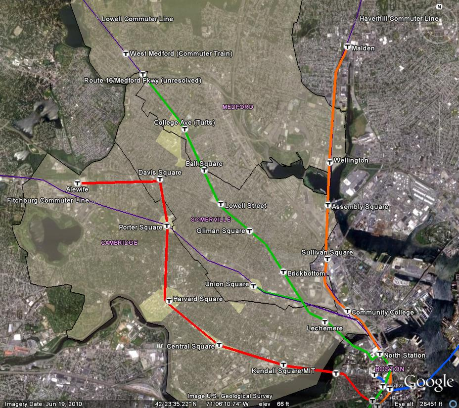
Anticipated 2015 Rail Service in the cities north of Boston. All Green Line stations north of Lechemere are new. Subway lines are red, orange, and blue. The Green Line is light rail that will operate on dedicated right-of-way in the area shown. Commuter lines are in purple. The map represents approximately 5 miles by 5 miles. Light shaded areas are selected heavy pedestrian areas.
An unusual opportunity has arisen in north-of-Boston cities to complete their rail networks and pedestrianize certain roads and squares. As remediation for increased traffic and environmental degradation of Boston’s Big Dig project (officially the Central Artery/Tunnel Project (CA/T)), the MBTA has received legally mandated capital from the state of Massachusetts to extend the Green Line light-rail service to the region (Wikipedia contributors). The Green Line extension will occupy part of the right-of- way of two commuter train lines that run north to Lowell and northwest to Fitchburg. Each double-track commuter line will be realigned to fit the new Green Line light-rail lines alongside them, allowing the commuter trains to continue their usual operations. No commuter rail stops exist along the proposed green line extension, which means there is no opportunity for passengers to switch between the two modes of service without going to Boston or resorting to impractical bus connections. This may be partially remedied in the future by additional Green Line extensions or new commuter rail stops, but such ideas have no plans or funding.
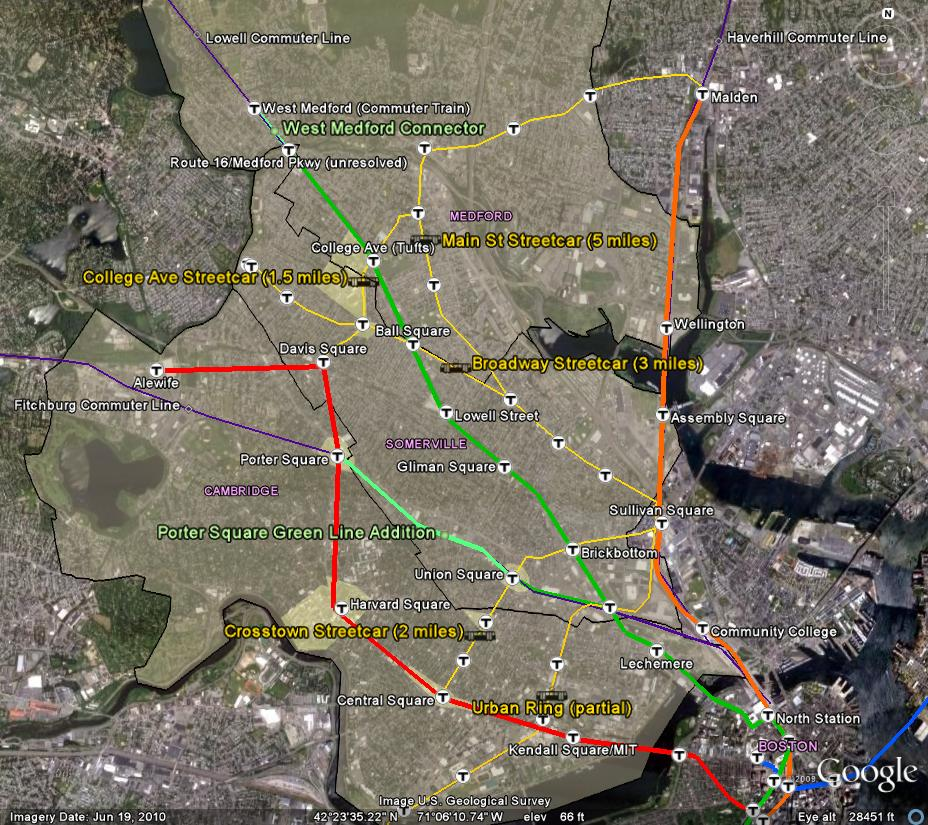
Figure 2. The scheduled 2015 rail map with my proposed additions. The added yellow streetcar lines and light green additions to the Green Line extension would make the rail network much more comprehensive. Stops are in key neighborhoods, line junctions, or approximate. The streetcar lines replace or reduce existing bus lines (many of which were historically streetcar lines). Shaded areas are some places that should be incrementally converted to car-free areas due to high pedestrian density and transit coverage.
The new Green Line extension brings rail service to an important under-served transit corridor. Although it fills a key section of the missing urban rail network, it neglects all key connections between the new and old service. The most obvious of those missing connections should be built as follows (see Figure 2):
Completing the rail network would have significant social, environmental, economic, and livability benefits by squelching car traffic and replacing slow and underutilized bus routes with more widely accepted rail transit. A successful funding plan and implementation would serve as a model for the rest of the metro Boston area. Modern streetcar lines with dedicated right-of-way would lead to large transit usage increases, and the streetcar streets could form the trunk of a car-free street network.
Tram-train alternative
More radically, the inter-modal services of the commuter train, Green Line light rail service, and key bus routes might all be replaced by a single mode--the tram-train (see Figure 3.) The tram-train would eliminate the need to double the track along the Lowell and Fitchburg commuter line right-of-ways, which represents a significant percentage of the capital project cost (Find Source). A tram-train could use an electrified version of the commuter rail tracks and serve the new Green Line extension with a combination of local and express trains. The existing double-track commuter rail would be adequate for this service, so long as passing tracks were placed at the new Green Line stations for express trains. Additionally, some of the tram-trains serving the two commuter train corridors could convert to streetcar operation to serve the missing links previously described (see Figure 4.) The tram-trains might eventually even replace the entire Green Line service if they could use the existing tracks. I will not explore the funding mechanisms of this project, since it contradicts the current Green Line extension project and would require coordination between the state, several cities, and the MBTA. That said, it would likely be far more cost and quality-effective than the current plan.
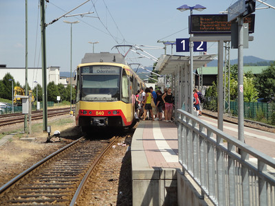 |
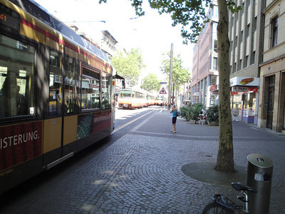 |
Figure 3. Tram-train service in an around Kahrlsruhe. The left image shows a tram-train outside of the city on heavy rail track. The right image shows the train operating as a streetcar in the city. Photos by the author.
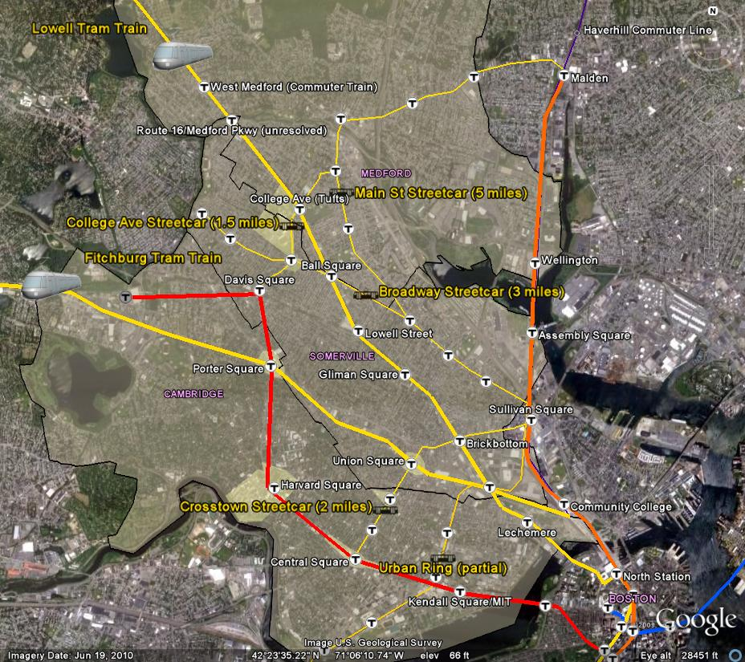
Figure 4. Alternative tram-train service replaces the two commuter lines and the Green Line extension (wide yellow lines.) Some tram-trains could convert to tramway (streetcar) operation at College Ave and Union Square to connect riders to the Red Line or Orange Line (via narrow yellow lines.) Tram-trains would act like commuter trains in the suburbs, stopping infrequently, and like a streetcar urban areas. Express trains from afar could skip the stops shown here and go straight to Boston. Eventually, the tram-train could replace the entire Green Line in Boston, as shown here.
Funding with Assessment or Impact Fees
For fairly compact cities like Cambridge, Somerville, and Medford, all residents would benefit from rail transit improvements; they would decrease traffic and help add connectivity to the existing network. Therefore, an assessment fee on limited bordering residential parcels would be controversial, especially since no such fees were assessed for the MBTA lines. In most cases though, improved commerce along a new route would justify an assessment on closely situated businesses. The proposed restoration of the famed Desire Streetcar along the French Quarter in New Orleans would fit this model, since the French Quarter businesses would directly benefit. However the Desire Streetcar would also reach poor neighborhoods, whose businesses and residents would have to be spared any assessment fee (Freemark).
Without quantifiable economic benefits, assessments are a poor method of enthusing property owners about new rail service. Recently, property owners in North Temple, Utah rejected $110 per foot frontage assessment to fund light-rail expansion that would have connected the Salt Lake City Airport to Salt Lake City via North Temple. (Raymond). The government failed to convince assessed property owners that the light rail would increase their property value or attract business to North Temple. Adding to the opposition was the fact that the opponents of the assessment would likely not use the light rail line themselves, since many were simply holding the property for investment purposes. For an assessment to have residential property-owner support, the owners ideally receive the double benefit of property appreciation and their own livability improvement by using the line themselves. In towns like Somerville, with a high percentage of home renters, it would be difficult to assess property owners for a rail improvement. Owners would not experience the benefit of using the new transit and might have difficulty passing the assessment cost on to renters before and even after the line is complete. Owners throughout the city would experience property appreciation from a comprehensive rail transit system, thus preventing the gentrification in a specific area that happened in Davis Square and is feared at certain new Green Line stations (Kahn, 2007).
Parking Impact Fees
The greatest boon for transit and car-free public space would be an impact fee on the automobiles, which discourage transit usage and dominate valuable right-of-way with moving vehicles and parking. The cities north of Boston have recently adopted resident parking permits to raise funds through permit fees and fines. This technique is also effective for forcing visitors to pay for metered spots or leave their cars at home and take transit. Rather than only limiting non-residents’ use of on-street parking, municipalities should simply charge all users of on-street parking and direct the funds to improved public transit on corridors near that parking. Anyone wishing to park on the city’s streets could pay for hourly or lengthier passes, and the city could offer small discounts for residents and more for those with special needs. By imposing on-street parking impact fees on residents, the city would give many residents direct incentives to reduce their car ownership. Land use-laws would then also need to prohibit paving yards for parking, an all too common practice in the area.
In addition to an annual car registration fee that declines with car age (City of Somerville), Somerville gives resident permits to each household for a fifteen dollar fee and two visitor cards to each household for visiting cars for five dollars each (City of Somerville). These nominal permit fees eliminate a revenuesource and encourage automobile ownership over transit use. However, Cambridge is considering permit price increases, in part to combat climate change and increase livability through non-motorized transportation. The city has proposed an increase in residential parking permits from eight to twenty dollars per car per year starting in 2011, and then an increase to twenty-five dollars in 2013 (Thomas). The ordinance change will require a public vote. The Cambridge Climate Congress, a city entity created in 2009 in response to climate change, goes farther and proposes increases every year for the next twenty years, and also suggests congestion pricing to discourage driving during commute hours (Cambridge Climate Congress).
To augment yearly fees, technology should facilitate the ability to charge for temporary parking and eliminate parking meter infrastructure. Drivers could purchase a pass online or via a mobile phone and associate it with their license plate for a specific time period and type of street (business or residential). Somerville has already outlined such a plan (City of Somerville). A steady increase in parking fees could help the city maintain a stable revenue source while removing parking spaces in favor of rail transit lines and public space. Residents would surely be more supportive of the increases if they funded specific transit and public space improvements.
Driving Fees
In many cities, especially those north of Boston, substantial car traffic on a city’s roads is through-traffic that pays nothing beyond the gas tax for usage and does no revenue-generating business with the city. Road use is traditionally paid for in part by gas taxes, but these taxes are national and state/province- mandated, politically difficult to increase, and do not cover the full infrastructure costs (Williams-Derry). More importantly, no one pays direct fees for the externalities of pollution, poor health, and road congestion of the automobile, which disproportionately harm those who do not use cars. The various impacts of driving have been evaluated on a per mile basis, and the resulting data should form a valid political basis for charging per mile (Kimbrel, 1998).
Congestion fees have gained acceptance from economists and some leaders as a way to correct a deadweight loss in road efficiency created by subsidized driving (Arnott, De Palma, & Lindsey, 1993). Cities should indeed charge drivers based on the time-of-day and the amount that drivers use their roads, but road efficiency should not be a desired goal since it increases vehicle speeds and rewards fee-payers with easier trips. Rather, cities should charge for gas tax shortfalls and economically quantify externalities so that generated revenue can systematically replace automobile right-of-way with that of transit and non- motorized uses.
In addition to peak driving-period fees, general driving fees are currently being considered as a replacement to the gas tax in North America (Parry, 2005). The implementation technology is still evolving, though Holland has already planned a per-kilometer driving fee beginning in 2012 that uses satellite technology to track cars (Cendrowicz), and Oregon recently completed a pilot project to replace the gas tax with a driving fee. Oregon’s project participants showed 91% satisfaction with paying driving fees versus gas taxes (Oregon Department of Transportation). Since privacy is paramount to Americans, Oregon’s deployed technology used GPS to track how much each type of road was driven (federal, state, county, or municipal) and at what time of day the trip occurred without storing the specific roads used bythe driver. The data was transmitted to computers at gas stations during fill-ups, which added the charges to the driver’s gas bill. The Oregon project’s goal was in part to develop a simple device that could be made by competing third party vendors, much like GPS devices. If the shortcomings of such a system are rectified--charging non-equipped cars a high gas tax to incentivize adoption, handling electric cars, etc.--it should be fairly inexpensive to implement it in states or metro-regions..
Furthermore, if tracking technology like Oregon’s or Holland’s can maintain anonymous data about each road’s usage, cities could channel the fees from a particular corridor to build and maintain a parallel transit line. Once the transit line was built, a combination of passenger fares and driving fees along that corridor would maintain it. The city should continue to increase the impact fee and decrease the transit fair until transit usage were maximized or the fee reached the true external costs of driving, which would likely be quite high (Kimbrel, 1998).
In addition to some technological and political hurdles, it may be legally difficult to use the driving fee to fund transit operations. Impact fees have traditionally been levied only on new developments to offset the municipality’s subsequent capital improvement costs (Wikipedia contributors). However, there are precedents for applying a type of impact fee called a mitigation fee to automobile use. For example, the Tahoe Transportation District began levying a mitigation fee on each day of rental car use by non- residents “to assist in the achievement and maintenance of environmental thresholds for transportation, water quality, and air quality” (Tahoe Regional Planning Agency, Tahoe Transportation District). The numerous externalities of driving through a city suggest that mitigation fees should be allowed to fund transit if they reduce car use on the routes whence they are collected. By legally binding specific transit and public space improvements to fees on specific roads, cities can avoid public distrust that is associated with other driving-associated fees that ultimately make their way to a general maintenance and improvement fund. The city should post signs along major roads that describe the improvements that the fees are funding, and could even use a digital display to tally the amount of capital funds raised (see figure 5). City councils should enumerate the specific projects to be funded by driving fees and then seek a vote to gain public approval. Animated simulations and comprehensible economic analysis of the proposed projects would further increase support (see figure 6).
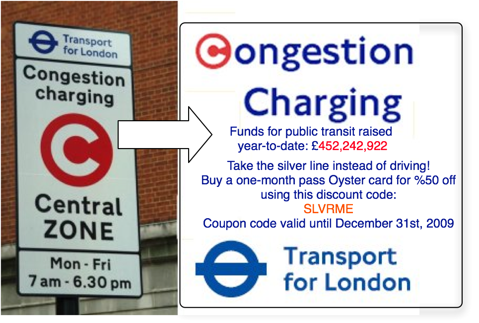 |
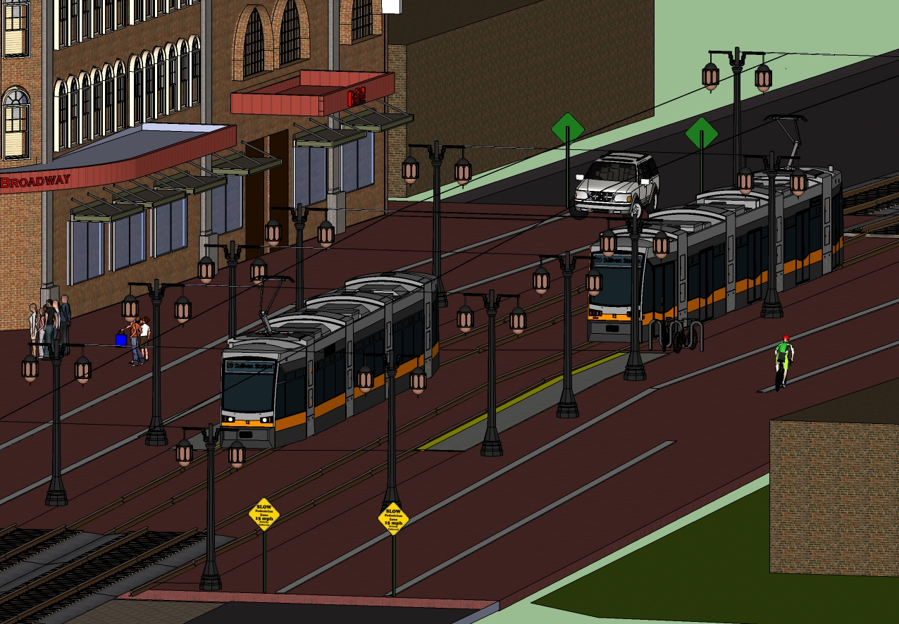 |
Figure 5. A London congestion zone sign modified to a digital sign to display a tally of the funds currently accumulated by congestion fees. Such signs could be displayed on roads that generate funds for specific projects. |
Figure 6. A partially pedestrianized version of Broadway in Somerville. Such 3D depictions, if done professionally with animation and pinpointed economic advantage, would go a long way toward building support for driving fees, improved transit, and public space. Designed by the author. |
Example funding plan for a Somerville streetcar network and pedestrian space
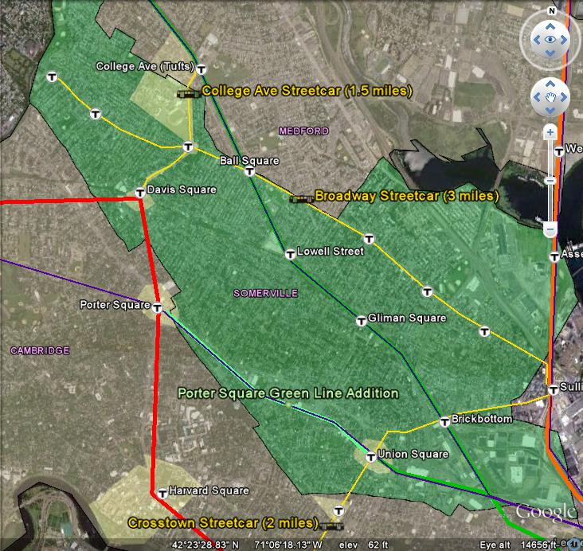
Figure 7. A streetcar network proposal for Somerville. With the six total miles of track shown in yellow and a Porter Square Green Line addition, Somerville could have a comprehensive transit network. Virtually every parcel in Somerville would fall within one half-mile of rail-based transit, meaning ten minutes or less walking. The streetcar lines add key connections between the other lines. Highlighted areas some of many places that could progressively become pedestrianized by replacing car lanes with streetcars and plazas.
A comparable streetcar construction project in Portland Oregon, the Portland Streetcar Loop project, will cost $148.27 million to build a 3.3 mile extension of the existing system. (Weinstein). Similarly, the South Lake Union Streetcar in Seattle, Washington cost $50.5 million in 2005 to build a 1.3 mile line andacquire streetcars, the first modern streetcar line in the city (Wikipedia contributors). We can thus take $50 million per mile to be a reasonable ballpark capital cost for streetcarservice. About five out of the six miles of streetcar track that Somerville needs fall within Somerville. Additions to the Green Line would likely be state-controlled since it is the MBTA’s service. Let us thus examine the funding possibilities for the five miles of streetcar track in Somerville, assuming that Cambridge would fund the sixth mile and the MBTA is pressured by it obvious practicality to make the green line additions. With evidence that the anticipated Federal Transportation Bill may fund about 60% of capital transit costs, a five mile, $250 million dollar Somerville streetcar project would leave the city to raise $100 million in capital if the state or MBTA did not contribute anything (see figure 8) (Weinstein).
Portland Streetcar Loop versus the proposed Somerville Streetcar network
Portland Streetcar Loop Information is based on its Summary Financial Plan (Oregon Metro) |
Somerville Streetcar Estimates |
|
Length of track |
3.3 miles |
5 miles |
Opening Year Capital Costs |
$146,915,000 |
$250 million |
Federal Contribution |
$75 million
|
$150 million
Based on 60% federal match presumed in the anticipated Federal Transportation Bill. |
State Contribution |
$20 million (Lottery Bonds) |
$0 The state is using bonds to fund current MBTA expansion projects. It cannot be assumed that funding would become available. |
Regional Contribution |
$3,733,000 (Metro Transportation Improvement Plan) |
$0 The MBTA currently has no budget for additional capital improvement plans. |
Local Contribution |
$27,182,000 - City of Portland Tax Increment Funds $15 million - Local Improvement District $6 million - Portland System Development Changes |
$100 million See figure 9 for local funding break downs. |
City Population |
582,130 |
74,405 |
Population Density |
Portland’s system would be largely used by non-residents, thus density is not a reliable indicator of usage. |
18,147.6/sq mi (7,019.3/km2) (Wikipedia contributors) Somerville is the 17th densist city in the United States as of the 2000 census. Cambridge is 30th. (Wikipedia contributors) |
City’s 2010 Budget |
$2,751,638,556 (City of Portland) |
$171,879,903 (City of Somerville) |
Figure 8. A comparison of the Portland Streetcar Loop funding plan to a Somerville funding plan. Portland enjoys strong regional and state transit support, whereas Somerville cannot currently rely on regional or state funding, especially because funding is already dedicated to the Green Line extension.
Somerville’s Funding Possibilities
Somerville could fund its $100 million share with the aforementioned parking fees and business assessments (This does not include interest payments on the bonded capital, but not all the capital would be required up front.). Driving fees might eventually contribute as well, but are not yet feasible enough to consider seriously at this point. The 2006-2008 American Community Survey 3-Year Estimates give an approximate aggregate number of vehicles available of 33,351 out of a population of 69,662 in Somerville. (By way of comparison, the wealthier and more suburban town of Newton has 54,557 cars for 93,447 people) (US Census). Were the full $100 million cost to be bore by a parking permit issued to every car used by residents of the city, the cost would be about $300 per car per year over ten years. Of course, a significant percentage of cars are parked in private lots and spaces, and permit costs would decrease on-street parking demand somewhat. Though the elasticity of demand for on-street residential parking is difficult to calculate, it is likely that a fairly high price point, such as $100 per car per year would attract substantial payers, if the alternative were to lose the ability to park on the street. If the city enticed 15,000, or approximately half of drivers to pay a $100 fee, it would raise $15 million over ten years. If the city furthermore sold day passes for residential streets for a modest fee like $5 per 24 hours, it could create additional revenue. It is reasonable to believe that the equilibrium supply/demand price points could generate about $25 million of the $100 million needed.
Somerville would likely be able to leverage an assessment on the businesses along Broadway, which would greatly benefit from streetcar service. The business corridors of the College Ave. and Crosstown Streetcar lines would offer more opposition since they will all soon be served by some MBTA subway or light-rail service. Nonetheless, the city should be able to demonstrate an economic benefit to increasing transit connectivity along these corridors, and thus justify an assessment. More importantly, the streets served by streetcars would enjoy substantially improved public space as car lanes and parking were removed to give pedestrians and streetcars right-of-way. Much of Broadway is nearly one hundred feet wide, including sidewalks. Reallocation of some of this space to streetcars and pedestrians would substantially improve commercial activity. Somerville already plans to redevelop the East Broadway corridor and reduce driving lanes, but is ignoring the opportunity to improve transit (City of Somerville). To fund the remaining $75 million of the projects, businesses and institutions would need to contribute a combined $7.5 million per year over ten years. Tufts University would be one of the biggest beneficiaries of the College Ave Streetcar line and could reduce their shuttle transit and parking expenses in response to the new service. They would need to contribute substantially to the project. An estimated 500 businesses have addresses directly on the streetcar lines (ReferenceUSA), 355 of which are on Broadway. The cost to each business would be $15,000 a year for ten years to cover the $7.5 million needed. Naturally, the actual cost per business would vary based on the size of the business. Institutions like Tufts would contribute a larger sum, and many additional businesses within walking distance of the new streetcar lines would pay assessments as well. With the right distribution of assessments, there might be an acceptable ten-year yearly payment to support streetcar development. The city would also have to fund some operations to subsidize desirable low fares, but these should be minor compared to the capital expense. Alternatively, the MBTA could assume operations.
Orienting public space away from car use
Though streetcar investments would lead to some traffic reduction, it would not alone create attractive public spaces. Somerville’s best effort at public space, Davis Square, is still plagued by heavy automobile use. Most of these trips are or would be unnecessary were a comprehensive rail transit system in place. If a streetcar network were completed, substantial parking and car lanes would be eliminated, giving multiple incentives to reduce auto trips. In places like Davis Square, the streetcar networks, upon extending to Cambridge and beyond, would mean that some streets would be reduced to one lane and one direction of traffic (see figure 9).
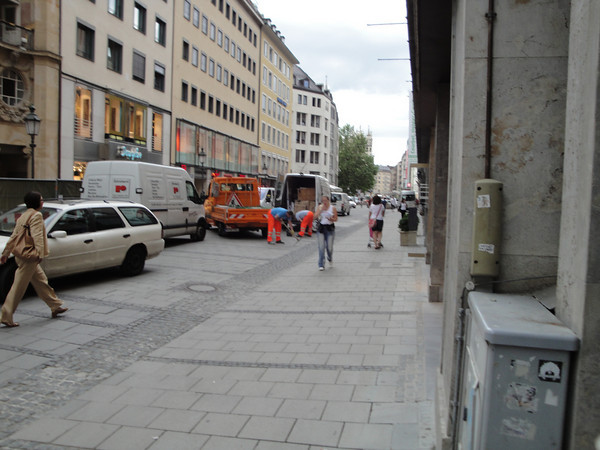 |
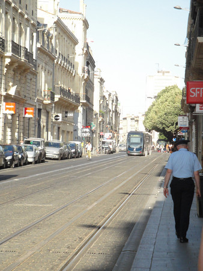 |
Figure 9. Car-reduced streets in Munich (left) and Bordeaux (right). In Munich, delivery and work vehicles have easy access to the street, but it is clearly paved for pedestrians. In Bordeaux much of this street has been diverted to new streetcar use, while still allowing limited car use. Such car-reduction transitions would be highly effective in Somerville’s business districts. Photos by the author
In a second phase after car usage declines, all car lanes would be removed and replaced by pedestrian space. Deliveries could still be made by trucks at limited times until a more automated system could be implemented via the streetcar network or metro tunnels (see figure 10.) (Crawford, 2000). The phased in pedestrianization of Davis Square would require more funding through assessments or other fees to create a functional and aesthetically attractive space. It might be more effective to pedestrianize less successful squares like Union Square first in order to create a more dramatic change and enviable model project.
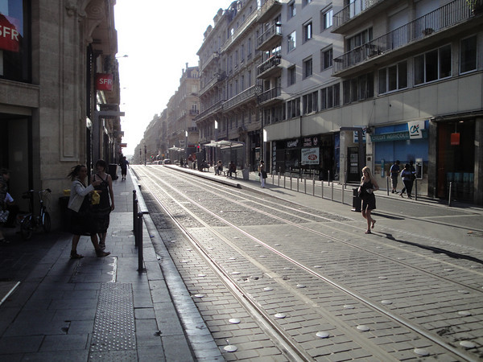 |
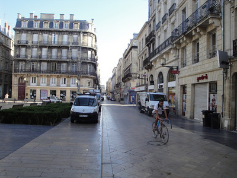 |
Figure 10. Car-free streets in Bordeaux. The street on the left has been converted to streetcar use. The street on the right is for bikes and pedestrians. Deliveries are allowed at limited times, such as this morning time period. Photos by the author.
Fully eliminated traffic on through-ways like Broadway would take several phases of lane reduction. All through-traffic would have to use other routes like Highway 93 and Massachusetts Ave. until they too underwent car lane reduction in favor of rail. Solving the logistics of improving on-street rail networks while simultaneously deconstructing driving networks is challenging, but accurately pricing the externalities of drivings should eventually force these changes worldwide and create good redesign templates.
Conclusion
As North America’s most destructive dependency, the attempt to reduce and eliminate cars on the city streets must be attacked multi-pronged with great transit, pedestrian space, car usage fees, and of course better education about mobility choices. Without an augmentation in local government financing or a strong regional agency, such changes will be impossible, even though they more than pay for themselves in traditional and full-cost accounting (Wikipedia contributors). The cities which identify ways of extracting money from drivers for transit and public space improvements can kill two birds with one stone by both reducing auto use and funding projects. It seems paramount that cities large and small take the initiative to fund their own improvement projects, even if those projects represent a 5 to 10% increase in their annual budgets like my plan for Somerville would. Good transit and public space redevelopment throughout the world and even in North America should awaken leaders and citizens to the potential of their settlements. Cities are also in desperate need of funds for other vital projects--the education and food systems in particular. Funding comprehensive transit and people-oriented space in cities is a catalyst for cost reductions in health-care, car infrastructure, and energy usage, which can free up funding to address those pressing issues.
References
Arnott, R., De Palma, A., & Lindsey, R. (1993). A structural model of peak-period congestion: A traffic bottleneck with elastic demand. The American Economic Review, , 161-179.
Cambridge Climate Congress.Cambridge climate congress proposals. Retrieved 9/8/2010, 2010, from http://www.cambridgema.gov/CityOfCambridge_Content/documents/Cambridge%20Climate%20Co ngress%20Proposals 1-21-10.pdf
Cendrowicz, L.Holland's plan to cut traffic: A tax on every kilometer driven. Retrieved 9/9/2010, 2010, from http://www.time.com/time/health/article/0,8599,1949156,00.html
City of Portland.City of portland, oregon fiscal year 2009-10. Retrieved 9/8/2010, 2010, from http://www.portlandonline.com/omf/index.cfm?c=51313&a=268836
City of Somerville. (a). City of somerville - broadway streetscape project in east somerville. Retrieved 9/8/2010, 2010, from http://www.somervillema.gov/spotlight.cfm?id=68
City of Somerville. (b). City of somerville, massachusetts proposed fiscal year 2010 municipal budget. Retrieved 9/8/2010, 2010, from http://www.somervillema.gov/cos_content/documents/CityofSomervilleFY10Budget.v6-July-8.pdf
City of Somerville. (c). Motor vehicle excise tax: Frequently asked questions. Retrieved 9/8/2010, 2010, from http://www.somervillema.gov/Section.cfm?org=ASSESS&page=119
City of Somerville. (d). Parking solutions task force. Retrieved 9/8/2010, 2010, from http://www.somervillema.gov/cos_content/documents/ParkingSolutionsTaskForceReport.pdf
City of Somerville. (e). Permit parking. Retrieved 9/8/2010, 2010, from http://www.somervillema.gov/section.cfm?org=traffic&page=138
Crawford, J. H. (2000). Carfree cities. Utrecht: International Books. Crawford, J. H. (2009).
Carfree design manual. Utrecht: International Books ;. Freemark, Y.New orleans rekindles hopes for a desire streetcar « the transport politic. Retrieved
9/8/2010, 2010, from http://www.thetransportpolitic.com/2009/05/26/new-orleans-rekindles-hopes-
of-a-desire-streetcar/
Kahn, M. E. (2007). Gentrification trends in new transit-oriented communities: Evidence from 14 cities that expanded and built rail transit systems. Real Estate Economics, 35(2), 155-182.
Kimbrel, A. e. a. (1998). The real price of gasoline (report no. 3 an analysis of the hidden costs that consumers pay to fuel their automobiles) No. 3)International Center for Technology Assessment.
Lopez, R., & DSc, M. Racial segregation and transportation justice in an urban community: The case of the boston T riders union.
MBTA.Bluebook 2009. Retrieved 9/8/2010, 2010, from http://www.mbta.com/uploadedfiles/documents/Bluebook 2009.pdf
Oregon Department of Transportation.Concept and road user fee pilot program. Retrieved 9/8/2010, 2010, from http://www.oregon.gov/ODOT/HWY/RUFPP/docs/RUFPP_finalreport.pdf?ga=t
Oregon Metro.Portland streetcar loop project environmental assessment executive summary. Retrieved 9/8/2010, 2010, from http://library.oregonmetro.gov/files/020108pdxscloop_ea_b.pdf
Parry, I. (2005). Should fuel taxes be scrapped in favor of per-mile charges? Resources for the Future, RFF DP, , 06-36.
Press Democrat.SMART train to arrive two years late in central sonoma county. Retrieved from
http://www.pressdemocrat.com/article/20100120/ARTICLES/100129926
Raymond, A.North temple property owners reject fee assessment. Retrieved 9/8/2010, 2010, from http://www.deseretnews.com/article/700053474/North-Temple-property-owners-reject-fee- assessment.html
ReferenceUSA.ReferenceUSA. Retrieved 9/8/2010, 2010, from http://www.referenceusa.com/Home/Home
Robertson, K. A. (1990). The status of the pedestrian mall in american downtowns. Urban Affairs Review, 26(2), 250.
Sightline Institute.Portland-area population density map. Retrieved 9/8/2010, 2010, from http://www.sightline.org/maps/maps/sprawl_port_cs05m
Tahoe Regional Planning Agency.Rental car mitigation program. Retrieved 9/8/2010, 2010, from http://www.trpa.org/documents/docdwnlds/ordinances/COCh95.pdf
Tahoe Transportation District.Rental car mitigation fees. Retrieved 9/8/2010, 2010, from http://www.tahoetransportation.org/carrent.html
Thomas, J.Cambridge residential parking permit fees could increase. Retrieved 9/8/2010, 2010, from http://www.wickedlocal.com/cambridge/news/x1137369685/Cambridge-parking-permit-fees-could- increase
US Census.Custom table - american FactFinder. Retrieved 9/8/2010, 2010, from http://factfinder.census.gov/servlet/CTTable?_bm=y&-context=ct&- ds_name=ACS_2008_3YR_G00_&-mt_name=ACS_2008_3YR_G2000_B01003&-tree_id=3308&- redoLog=false&-geo_id=16000US2545560&-geo_id=16000US2562535&- search_results=01000US&- dataitem=ACS_2008_3YR_G2000_B25046.B25046_1_EST|ACS_2008_3YR_G2000_B992512.B9 92512_1_EST|ACS_2008_3YR_G2000_B992512.B992512_2_EST|ACS_2008_3YR_G2000_B992 512.B992512_3_EST|ACS_2008_3YR_G2000_B01003.B01003_1_EST&-format=&- subj_treenode_id=17552758&-_lang=en
Vuchic, V. R. (2007). Urban transit systems and technology. Hoboken, NJ: Wiley. Weinstein , N.Streetcar funding restrictions eased. Retrieved 9/8/2010, 2010, from
http://djcoregon.com/news/2010/01/13/federal-dept-of-transportation-will-factor-in-carbon-
footprints-streetcars-in-next-round-of-capital-funding-trpn/
Wikipedia contributors. (a). Full cost accounting , 2010, from http://en.wikipedia.org/w/api.php?action=query&prop=revisions&titles=Full cost accounting
Wikipedia contributors. (b). Green line (MBTA) , 2010, from http://en.wikipedia.org/w/api.php?action=query&prop=revisions&titles=Green Line (MBTA)
Wikipedia contributors. (c). Impact fee , 2010, from http://en.wikipedia.org/w/api.php?action=query&prop=revisions&titles=Impact fee
Wikipedia contributors. (d). List of united states cities by population density , 2010, from http://en.wikipedia.org/w/api.php?action=query&prop=revisions&titles=List of United States cities by population density
Wikipedia contributors. (e). Massachusetts bay transportation authority , 2010, from http://en.wikipedia.org/w/api.php?action=query&prop=revisions&titles=Massachusetts Bay Transportation Authority
Wikipedia contributors. (f). Portland, oregon , 2010, from http://en.wikipedia.org/w/api.php?action=query&prop=revisions&titles=Portland, Oregon
Wikipedia contributors. (g). Somerville, massachusetts , 2010, from http://en.wikipedia.org/w/api.php?action=query&prop=revisions&titles=Somerville, Massachusetts
Wikipedia contributors. (h). South lake union streetcar , 2010, from http://en.wikipedia.org/w/api.php?action=query&prop=revisions&titles=South Lake Union Streetcar
Wikipedia contributors. (i). Tram-train , 2010, from http://en.wikipedia.org/w/api.php?action=query&prop=revisions&titles=Tram-train&rvprop=timestamp;
Wikipedia contributors. (j). Urban ring project (MBTA) , 2010, from http://en.wikipedia.org/w/api.php?action=query&prop=revisions&titles=Urban Ring Project (MBTA)
Williams-Derry, C.Worldchanging: Bright green: Do gas taxes cover the costs of roads? Retrieved 9/8/2010, 2010, from http://www.worldchanging.com/archives/008264.html